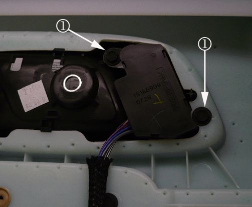
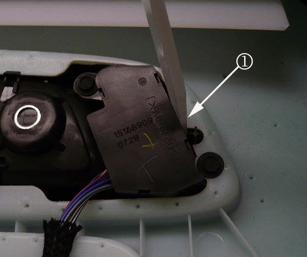
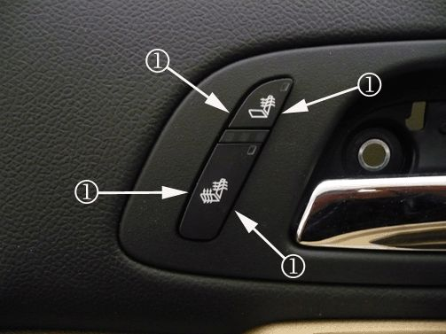

Body - Sticking/Binding Door Mounted Seat Switches
TECHNICALBulletin No.: 09-08-50-011A
Date: April 13, 2011
Subject: Sticking/Binding Door Mounted Seat Switches (Align Switch)
Models:
2007-2012 Cadillac Escalade, Escalade ESV, Escalade EXT
2007-2012 Chevrolet Avalanche, Silverado, Suburban, Tahoe
2007-2012 GMC Sierra, Yukon, Yukon Denali, Yukon XL, Yukon XL Denali
All Equipped with RPOs AN3, KA1, KB6
Supercede:
This bulletin is being revised to add model years. Please discard Corporate Bulletin Number 09-08-50-011 (Section 08 - Body and Accessories).
Condition
Some customers may comment that the door mounted memory/ heated/ cool seat switch buttons are sticking or binding.
Cause
This condition may be caused by the switch being out of alignment in the bezel, creating a hard contact between the switch button and the inside release handle bezel.
Correction
1. Remove the door trim. Refer to Front Side Door Trim Panel Replacement in SI.

2. Loosen both screws (1) holding the switch to the inside release handle bezel.

3. Using a flat-bladed tool (1), carefully shift the position of the switch to create a nominal gap all around its perimeter within the bezel. Tighten the two screws holding the switch.

4. Confirm that the switch buttons are free moving, and there is a nominal gap (1) all around its perimeter within the bezel.
5. Reinstall the door trim. Refer to Front Side Door Trim Panel Replacement in SI.
Warranty Information
For vehicles repaired under warranty, use the table.

Disclaimer